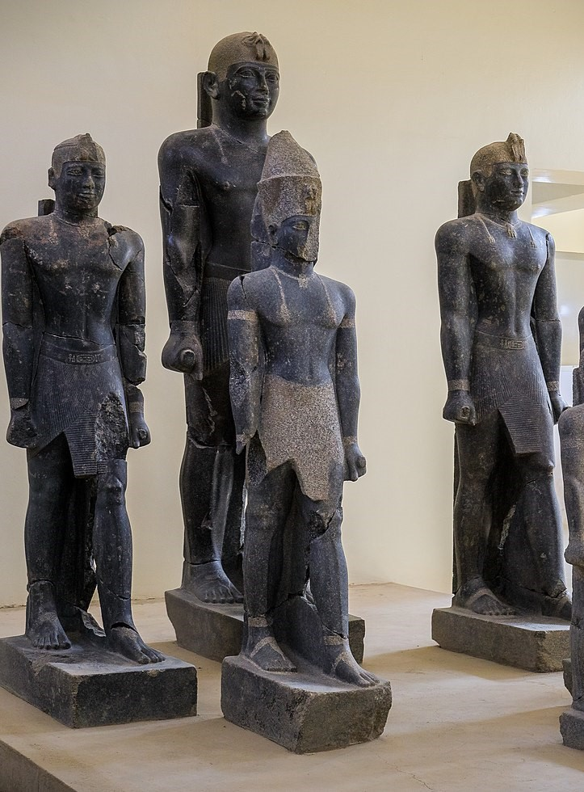
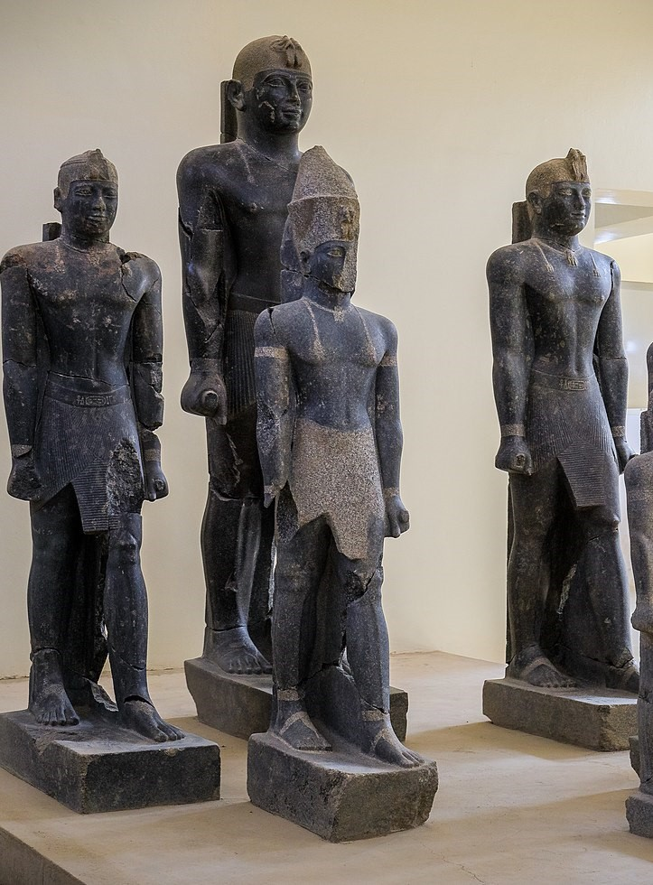

Hebrew, Heiroglyphs are African languages
𓁶
R
Hebrew is derived from heiroglyphs, jews left Egypt, bantu language shows relations to
both
11. how the “Bantu” languages are related to each other,
hieroglyphs and the original Hebrew/Aramaic/Semitic.
Ethiopians call their king “Negus”
African Americans call each other “Niggas”
Nguni people refer to their king as “Nkosi”
These all have the same etymology, its obvious if you say it
out loud.
These all correspond to the heiroglyph of a
snake which is where the letters
corresponding to “N” of various writing
systems come from, The snake used to be
on Kushite/Egyptian crowns this is what the
Zulu and Ndebele umqhele is based on.
The Egyptian crowns were not actually crowns but rather
hair accessories that often can only fit on African hair you
can watch here to see how the many “crowns” have
influenced the cultures of today.
It is already an academic fact that the semitic scripts are
descended from hieroglyphs, and all the writings systems
are derived from semitic scripts. Hieroglyphs represent a
writing system where each character has its own meaning
and sound and thus by combining the different hieroglyphs
you can create words that have new meaning based on the
combined sounds and symbols.
This is why in Isaiah 36:11 The language of the Hebrews is
described as the language of the “people of the wall”, this is
a reference to the fact that hieroglyphs were written on
walls and the people who spoke the language were often
depicted on the same walls, this makes sense considering
the Hebrews came from Egypt.
The “Bantu” language all have class systems dividing the
vocabulary because the different classes correspond to
different prefixes and the prefixes are descended from the
original hieroglyphs, this is why the languages have what
linguists call an “agglutinative” structure, where the addition
of individual sounds can add meaning to a sentence.
The letter “m” is derived from the heiroglyph corresponding
to water ripples this is why nearly every African language
has the “m” sound in the corresponding words for
water, water is the source of life this is why, the
prefix “mu”/“mo” is used for living people and
things and has also influenced words corresponding to
mother and women because they are the source of life.
The prefix “ba”/“aba” comes from the hieroglyph
representing an enclosure because the family/
community lived in such structures, it is symbolic of
a grouping. This has influenced the words
associated with men and fathers since they are typically the
protector/leaders of such structures.
I encourage you to investigate the hieroglyphs and writing
systems yourself in the following link especially if you do not
believe me, the more people investigate for themselves the
sooner we will be able to accurately interpret old knowledge
that they stole.
Bantu is the plural of Montu and although the term “Bantu”
has been used to simplify peoples history and create new
narratives, it still reveals the truth because the term “Montu”
originates in Egypt. Of course the symbolic meaning has
been simplified to a “god of war” since the symbols have
been interpreted and distorted by foreigners.


 
